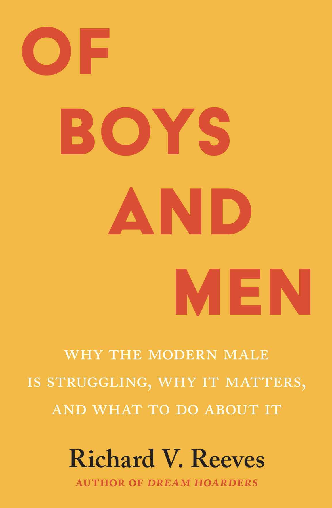

Review for Of Boys and Men

“Of Boys and Men” is a thought-provoking book written by Richard V. Reeves that provides a comprehensive analysis of the issues faced by boys and men in today’s society. Reeves, a political economist and social commentator, explores the male identity crisis, the intersection of race and gender, the influence of biology and culture on gender roles, and the political stalemate around gender issues.
The author makes it clear that talking about men’s issues does not in any way diminish women’s issues. Emphasizing one does not mean de-emphasizing the other. It is possible to “walk and talk at the same time”—we can promote both women’s and men’s issues simultaneously for the betterment of society. To this end, the author walks a gendered and political tightrope, paying homage to both sides while trying his best to stress the importance of the under-discussed men’s issues and their negative impact on society.
Hopefully, by the end of this article, you’ll leave with a deeper understanding of the challenges and proposed solutions facing boys and men in today’s world as expressed by Richard V. Reeves. Whether you’re interested in gender studies, sociology, or simply looking for a thought-provoking read, “Of Boys and Men” is a must-read book that will leave you with a new perspective on the male experience in society.
Male Malaise
The author starts by examining the “male malaise” in the first section of the book. This refers to the sense of unease and dissatisfaction that many men feel about their place in the world. Reeves argues that this malaise is the result of shifting social and economic conditions facing men today. He examines the decline of male education, jobs, and family support, all of which have contributed to the male malaise.
I’ll briefly touch on how men are falling behind in education. He states that in 2019 the gender education gap was worse for men than it was in 1972 for women. Women now make up the majority of college graduates and are increasingly represented in high-paying fields such as medicine, law, and finance. Meanwhile, men are more likely to drop out of high school and less likely to pursue post-secondary education—limiting their opportunities and making financial prospects worse.
By examining the root causes of the male malaise, including the impact of changing gender dynamics and education, Reeves lays the groundwork for a deeper understanding of the issues explored in subsequent sections.
Double Disadvantage
In the second section, he explores the intersection of race and gender, and the unique challenges faced by boys and men of color. Reeves argues that boys and men of color face a “double disadvantage” due to the combined effects of racism and sexism.
Reeves examines the ways in which racial and gender biases intersect and compound to limit the opportunities and life chances of boys and men of color. He explores issues such as the school-to-prison pipeline, the impact of racial profiling on black and Latino men, and the disproportionate rates of poverty and unemployment faced by men of color.
Reeves also highlights the importance of understanding the unique experiences and perspectives of boys and men of color in addressing broader issues related to gender and equity. By recognizing and addressing the ways in which race and gender intersect to create a double disadvantage for some individuals, Reeves argues that we can work towards a more equitable and inclusive society.
Rating: ⭐⭐⭐⭐⭐